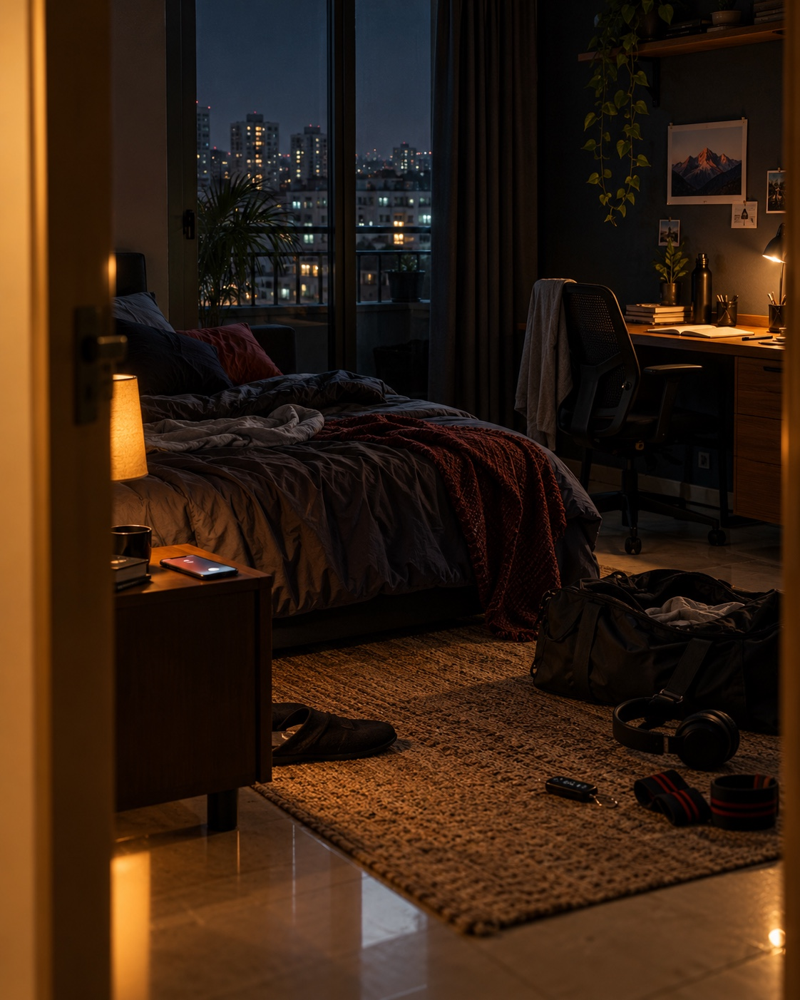

01 THE ROOT
Delhi taught me
how to want more
without leaving myself.
24 years of becomingHome. Winter drives. Cricket arguments. Malai chaap. The first draft of every dream.
After midnight / somewhere between versions
We have somewhere
to become.
No polished summary. No five-year plan. Just the roads, people, work, music, and unreasonable dreams that made me.
Take the passenger seat↓PASSENGER QUESTION / 00
Pick the first conversation. The complete route is still here when you want it.
Or keep scrolling. I know the route.
THE ROUTE / 01
I did not move with a master plan. I moved, learned, missed home, changed my mind, and kept the parts that felt true.
01 THE ROOT
02 THE DETOUR / 2025
03 THE RETURN
04 NOW
THE WORK / 02
The title changes. The instinct does not: notice the friction, understand the system, make something people can actually use.
By morning, the analyst had disappeared and the fan had taken over. The best sprint began there.
Open story ↗ 02EVENTIFYI got tired of a broken workflow before it reached a roadmap, so I built the tool I wanted.
Open story ↗ 03TEXT TO SQLA plain-English path from a business question to the answer, without an analyst in the middle.
Open story ↗THE ROAD / 03
Some people see transport. I see a machine, a mood, and a reason to take the longer road. The BMW M4 F82 made me a car guy. The Chevrolet Cruze made the obsession personal.
Best conversations happen when nobody has to make eye contact.
AFTER HOURS / 04
Sometimes I reach home and sit in the car for forty more minutes because the playlist understands the assignment.
Open this memory ↗OPEN THE GLOVEBOX / 05
Every time I return, the problems are still waiting. Somehow, I am lighter.
Read the long note ↗ PEOPLE / ALWAYSI am not self-made.
I am people-made.
Accidentally looking like I have a Boiler Room set at 8.
See the frame ↗ HOME / OCT 2026Some parts of you never grow up.
Forever mumma's boy ↗
THE LAST STOP / 06
You move away to grow. Some nights, you would trade all that independence to sit beside your maa and annoy her for no reason.
The original thought ↗END OF THIS RIDE / START OF ANOTHER
Bring a work idea, a car argument, a mountain plan, or one song that deserves a night drive.